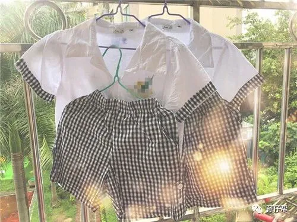
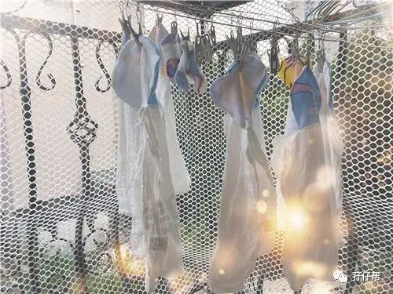
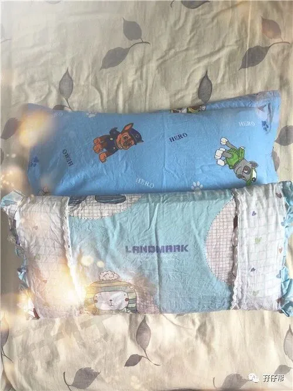
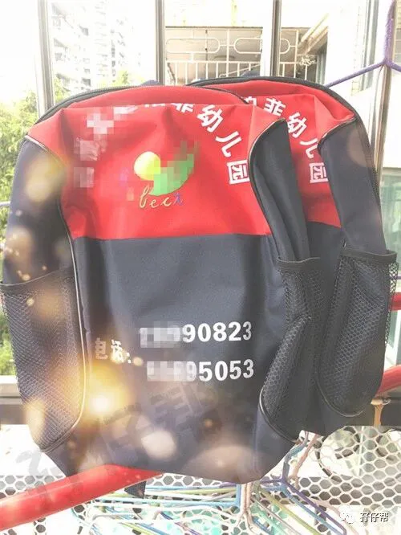
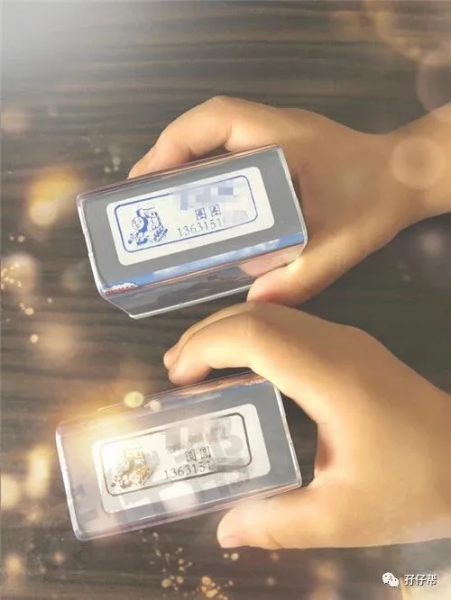
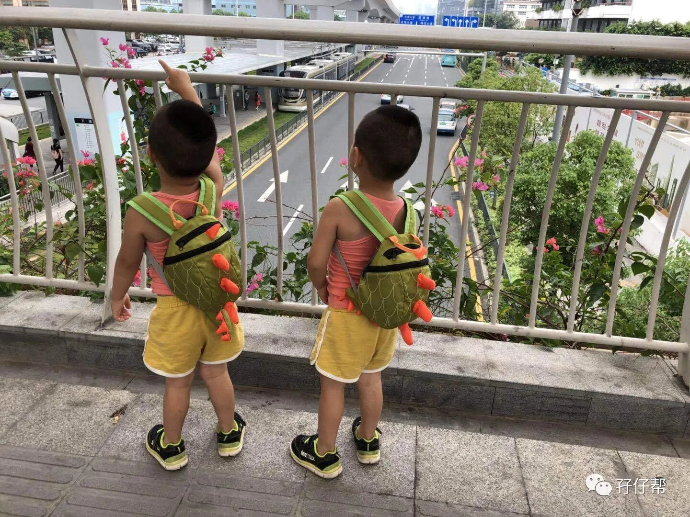

01
暑假已经接近尾声了，我和圆圈爸每天必做的一件事情就是看日历。看着开学季一天天逼近，我和圆圈爸睡着了都想偷笑。
在圆圈2岁半的时候，圆圈的大大姨就提醒我们要开始给圆圈兄弟作好入园准备了，起初，我和圆圈爸不以为然。
即使他们在入园之前还不会独立吃饭，穿衣服，等他们上幼儿园了会有老师教，自然就学会了。大不了就哭几天，哭多了就会适应下来了。
我对圆圈兄弟的适应能力还是蛮有信心的，瞧瞧哥俩去到别人家，从来不怯生，很快就当自己家那样熟络。
圆圈的表姐（圆圈大大姨的女儿），小金金，比他们大半岁，今年春季就开始上幼儿园了，据说整整哭了一个星期，打破了小小班的历史记录。
为此，圆圈的大大姨，又一次语重心长地告诉我：“要赶紧给圆圈做好上幼儿园的准备了。现在不准备，等你和两个娃一起哭到惊天地泣鬼神！”
我依然不当回事，觉得我那小外甥太娇气了点！
但自从那次幼儿园组织新生入园家长会，听了园长老师的建议之后，才发现确实有必要对圆圈的入园做些准备了！
小金金就是个最好的例子，不肯跟其他小朋友玩，不听老师指令，不会自己吃饭，不配合老师安排…
因为没有做好准备，哭了一个星期才半推半就肯去幼儿园，期间总是因为这些那些小问题，不得不让家长接回去“面壁思过”，总之一个学期下来，只有三分之一的时间是在幼儿园度过的。
眼看圆圈已经3岁了，依然不能独立吃饭。弟弟圈圈的生活自理能力更差，不会自己穿衣服，半夜还尿床。
思及此，给圆圈的的入园准备迫在眉睫了。
02
除了跟圆圈的大大姨取经，我还从各种育儿论坛上学习，结合家长会那天园长老师的建议，大致确定了要做好入园准备的四个大方面。
>>培养生活自理能力
之前因为省事，我们都默认圆圈外婆给圆圈喂饭，圆圈外婆每次煮好饭菜就先喂圆圈吃饭.
等我们大人上桌吃饭的时候，圆圈已经被他们的外婆喂的“土肥圆”了！
这样真的很省事！天知道同时伺候两个3岁的熊孩子吃饭，简直比上坟还难过。
但是，圆圈上幼儿园总不能把圆圈外婆也带去吧。
于是，我重新拿出尘封已久的宝宝凳，一到饭点，就要求他们跟大人一样坐下来吃饭，给他们准备各自的餐具。
起初他们并不配合，总是嚷嚷着要一边吃饭一边看电视或者手里要拿着玩具才肯吃。
老娘特么也不是吃素的，几次“威逼利诱”和“软硬兼施”下，圆圈渐渐形成一个习惯，吃饭时不看电视，不玩玩具，全程认真吃饭！
>>养成规律的作息习惯
不知从什么时候起，圆圈总是10点之后才肯睡觉，有时候甚至11点还打鸡血似的在客厅里“打怪兽”。
晚睡的后果就是入园体检的时候被儿保科医生宣判，身高体重属于中下水平。
我知道跟我有很大的关系。因为工作原因，我经常晚上9点钟才到家，这个时候他们就应该睡觉的了。但是他们一整天没有看到我，好不容易盼到我回来，就嚷嚷着要跟妈妈一起画画，读绘本。
这样折腾了个把小时就差不多10点多了，磨蹭几下就11点了。
同时，也因为他们的午睡时间太久，有时候可以从下午两点钟睡到5点钟，且没有规律。
我和圆圈爸商量了下，让圆圈爸白天多带他们出去参加户外运动，最好是围着小区跑上几圈，充分释放精力。
晚上9点前必须洗好澡，喝完牛奶，在床上候着，一起读绘本。跟他们约法三章，每个晚上读完一本书就要去关灯睡觉。
刚开始，圆圈很抗拒，读完绘本后依旧想要去客厅“干一架”（没办法，两个孩子，有伴，可以浪的东西太多了，不舍得觉！）
在我和圆圈爸的通力合作下，按照幼儿园的作息时间，让圆圈坚持了6个晚上，基本上能在10点之前进入睡眠状态。
循序渐进，再努力一个星期，在他们入园之前，争取在9点前就把他们哥俩送到周公那里去！
>>锻炼社交能力
虽然圆圈兄弟从娘肚就一起玩到大，从来不缺玩伴，大概这就是双胞胎最主要的好处吧。
但社交能力还是缺了点，有时候遇到年纪相仿的小朋友，他们也会表现的比较拘谨。
为了防止圆圈在幼儿园不合群，我和圆圈爸一到周末就带他们往小孩子多的游乐场跑，努力创造机会让他们与同龄小朋友多接触，多交流，多互动。
前几天，我下班回家，圈圈跟我说：“妈妈我有小女朋友跟我一起玩了，圆圆还没有！”
经过圆圈外婆的解释才知道，圆圈去小区玩，认识了同小区一个两岁多小妹妹。
但是很奇怪的是，圆圈明明长得一模一样，小女孩只愿意跟圈圈玩，不跟圆圆玩。可怜的圆圆看到“情场得意”的圈圈在我面前炫耀时，委屈得哭了！
我和圆圈爸实在哭笑不得！
>>培养自保能力
虽然家长会上，园长老师没有提到要给新生入园的孩子培养这个自保能力，但是据说幼儿园里经常有孩子互相打架的事情发生。
圆圈是男孩子更加有攻击性，除了担心他们攻击别的孩子，更担心他们被欺负。
有一次带圆圈去市中心玩，圆圆在一个小玩偶的边上偶遇一个2岁多的小女孩，被小女孩无来由地扇了两巴掌。
这个安静的美男子实在搞不懂这么萝莉的小女孩居然那么暴力，伤心得哭了。
我很气愤，小女孩家长一句道歉都没有就悻悻然走掉了，同时也很自责，没有保护好自己的儿子，害他被别人欺负了。
我知道这种情况只是开始，上幼儿园之后，孩子打人或者孩子被打是家常便饭，我对此非常焦虑。
据圆圈爸的反馈，圆圆在那之后出去外面玩，看见有小女孩过来就动手打人。
没想到，他的无端被打会是他主动去攻击别人的始作俑者，真把老母亲我急坏了。
圆圆性格偏向女孩子个性，敏感脆弱，看来我得多花心思去引导了。
03
圆圈妈的经验分享
2018年6月30日，圆圈的新生入园家长会的日子！
这是我第一次以家长的身份参加家长会。
我和圆圈爸像个勤奋好学的三好学生一样，早早来到幼儿园，坐在前排很认真地听园长老师的会议内容。
入园是孩子从家庭踏入社会的第一步，更是人生中迈向独立的一个里程碑。
作为双胞胎妈妈，我肩负的重担感觉不止double那么简单！
曾听说孩子入园之后，做家长的并不会如传说中那么轻松。我很焦虑，但也很期待着！
这是圆圈兄弟成长的必经之路！
作为他们的妈妈，我必须是积极的，正能量的，才能引导他们慢慢地融入这个社会，渐渐地走进大集体的生活。
再苦再累的三年都熬过来了，还有什么不能面对的呢？
来吧！圆圈的幼儿园生活！我们圆圈兄弟以及他们的爹妈都准备好啦，就等你咯！
END
本文系圆圈妈原创，来源于孖仔帮，专注双胞胎孕期育儿经验分享，著作权归孖仔帮所有。
彩蛋：各位双胎妈妈，更多孖仔帮原创育儿文章请猛戳 "阅读原文" ，或者直接上圆圈妈的个人博客，大把双胎孕期育儿心得经验分享。





